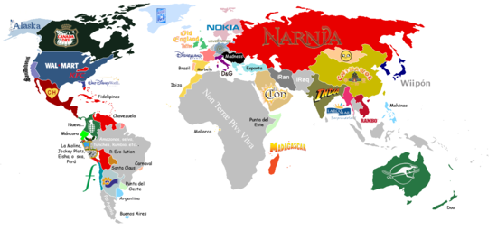

Pituco
 De: La Frikipedia, la enciclopedia extremadamente seria.
De: La Frikipedia, la enciclopedia extremadamente seria.
| De la serie tribus urbanas del mundo:
|
| Pituco
|
Ejemplo de la tribu
|
Típica imagen de pitucos de mierda de "Alta Sociedad"
|
|
| Hábitat
|
Asia, Máncora, Miraflowers, Surco, La Molina, San Mickey, Jockey Platz, Los Olivos Plus, San Isidro y todas las zonas de clase alta y media alta de todo el país
|
| Inteligencia
|
¿Osea?
|
| Frase favorita
|
Osea... pucha, ¿manyas?
Déjame masticarlo
Nada, que... (antes de un floro larguísimo)
|
| ¿Peligroso?
|
Sólo si van de compras
|
| Obsesión
|
Todo lo que sea de marca
|
| Notas
|
Son expertos tuteando a gente que no conocen
|
«Osea pucha mañana Máncora ¿manyas?»
~ Pituco hablando de sus típicos planes de fin de semana
«Osea pucha que mi vieja no me deja salir ¿manyas?»
~ Pituco dando una excusa para no ir a tu fiesta pobre
«Osea pucha un toque déjame masticarlo ¿manyas?»
~ Pituco pidiendo tiempo para pensar
«Osea me tapo un ojo, me tapo el otro y naa que ver ¿manyas?»
~ Pituco usando su lógica
«¡Oiee! ¿quiénes son esos?? ¡Noo! pirañas, osea, míralos aggg, pucha qué asco fiuuuu!»
~ Pituco con asco al encontrarse con reggaetoneros o amixers
«Oieee, pero mira su rooopa. Recién bajada del cerro. Agg, osea, pucha, que LOSER!!»
~ Pituca criticando a una chica normal
«¿¿VIP?? ¿osea? pucha na que ver, solo PLATINUM así que shu shu! ¿manyas?»
~ Pituco dando a entender que ni el VIP les pisa los talones
Los pitucos (Blackberris Billetonus Jodeputensis) son una tribu urbana del Perú. Usualmente frecuentan el Jockey Platz y parques presumiendo su superioridad financiera.
Suelen estar ausentes de todo lo que sucede en Sudamérica y tener apellidos italianos, ingleses, alemanes, franceses, holandeses y europeos en general.
Los pitucos poseen una relación muy particular con los pirañas, los cuales les sacan la mierda para que aflojen el celular comparten amablemente y por tiempo indefinido los bienes materiales de los pitucos. Los enemigos a muerte de los pitucos son los cholos, amixers y demás seres sub humanos guachafos.
Hábitat
Estos enanos de América Kids se ríen de ti
por tu cara de huevón por tu inferior poder adquisitivo
Suelen habitar sitios "fichos" o de alta sociedad. Haciendo un repaso por ciudad:
- Lima: la más pituca de todas. La Planicie, La Molina, Miraflowers, San Isidro, San Miguel, Surco, San Borja, Jesús María, Barranco, Lince.
- Arequipa: Challapampa, Yahawuara, Cayma, Vallecito, la arboleda, el Club Internacional y los Barrios que limitan con la UCSM.
- Trujillo: El Golf, jardines del golf, San José de California, balneario de las delicias y palmeras del golf.
- Chiclayo: Santa Victoria.
- Cusco: Urb. Santa María, Mariscal Gamarra, Santa Mónica, Huancaro.
- Cajamarca: los barrios que limitan con el Quinde Shopping Center.
- Huancayo: San Antonio, San Carlos, Chorrillos, Miraflores, Millotingo, La Ribera y La Florida.
- Tacna: Pescacerolli, Billinghurst, Pocollay, calle Arica, las urb. aledañas al Real Plaza Tacna como Rosa Ara y Villa Hermosa.
- Puno: Chanu Chanu, Bellavista, San Antonio, Salcedo, Isla Esteves, Huajsapata y Orkapata .
- Juliaca: La Rinconada.
- Talara: Punta Arenas.
Si no vives en estos sitios ... NO ERES NADIE.
Y en verano se le encuentra en el exclusivísimo balneario de Agua Dulce Eishaa en Lima, Punta Hermosa, Máncora y Punta Sal en el norte y Mejía en el sur, manyas!!
Características
Los pitucos pueden ser odiosos si es que se la pasan hablando por mucho rato ya que su acento es raro, pero si les metes cocachos los distraes con cualquier mierda se mantienen callados y no hacen daño a nadie. Cuando hablan suelen acentuar las palabras graves y hacer una pausa. Las calabazas pitucas se quedan sin aire cuando hablan. Otra característica de ellos es que tutean a todo el mundo (hasta al profe del colegio).
En cuanto a gustos musicales, les gusta todo lo que sea cursi y fresa: el pop de DisGay Channel, el pop-rock, hemo, desafortunadamente también les gusta la cumbia y la pachanga (sobretodo cuando van a las discos de Eisha! a coger bailar y embriagarse por semanas días, junto con su mascota amigo Tongo).
Pero antes que nada, son asiduos fanáticos de los artistas peruanos, de las cantantes de pop peruanas (como Adammo, Anna Carina y Mia Mont) y de los grupos de rock peruanos; Mar de Copas y Líbido son las 2 bandas que NO pueden faltar en el iPhone 5 de un pituco (osea??). También admiran al cabeza de pinga pelón de Gianmarco Zignago y al drogo de Pedrito Suarez Vertiz.
También hay pitucos jebis y góticos. Son los que suelen ir a los concerts de Metal en la zona VIP del María Angola o la Discoteca Vocé, al after-party del KryptoBar, y a las fiestas privadas góticas que se organizan en la av. Arequipa o en el Nóctulus y Brujox. Los pitucos otakus son esos frikis que coleccionan todo lo que se vende en los otakufest.
 El mundo según los pitucos, simple para la comprensión de estos individuos
Subespecies
- Pituco con plata.
- Pituco intermedio.
- Pituco misio.
- Pituco tacaño.
- Provinciano europeo.
- Pituco sin culpa.
- Boliviano en Lima en un 4x4.
- Los que comen en platos cuadrados y por eso se creen pitucos.
- Pituco de cono (el que se computa pituco pero vive en uno de los conos emergentes de Lima).
Enemigos típicos
- Cholos.
- Amixers.
- Wachiturros.
- Pirañas (odian a los pitucos, pero aman sus pertenencias).
- Pandilleros.
- Serranos.
- Ollanta Yupanqui.
- Issac Chumala
- Lo nacionalista y comunista.
- Grones (la barrabrava del Alianza Lima).
- Los caviarones, son tambien billetudos, pero estos pertenecen a la derecha.
Neutrales
- Jebis: aunque son más que nada neutrales, hay varios metaleros pitucos. Además, los bares jebis se encuentran en Miraflowers. Para conocer todas esas bandas "underground" hay que pasársela en internerd 30 horas diarias.
- Góticos: para no ser ignorante hay que tener acceso a la información, para tener acceso a la info hay que ser pituco. Ergo, muchos góticos son pitucos. De otro modo no se podría explicar de dónde consiguen esa ropa tan fina. Además todos sabemos que las clases de latín, esperanto, gótico, alemán, inglés medieval, noruego, finlandés, sueco, euskera, dansk, griego, sánscrito, holandés, ruso, alemánico y germánico no son gratuitas.
- Otakus: de hecho, ¿o acaso crees que alguien que NO sea pituco podría comprarse esos disfraces, todos esos mangas, todas esas huevadas e ir a los Otakufests?
Aliados
- Los únicos aliados reales de los pitucos son más
pendejos pitucos; todos ellos no conocen más mundo que su caserón.
- Chetos: pitucos argentinos.
- Conchetos: pseudopitucos o apitucados argentinos también.
Pitucos vs. cholos
Cholo (izquierda) vs Pitucos (derecha)
- Pituco en el prostíbulo: busca placer
- Cholo en el prostíbulo: busca a la hermana
- Cholo en TV: cómico ambulante
- Pituco leyendo periódico: intelectual
- Cholo leyendo periódico: busca chamba
- Pituco con maletín: ejecutivo
- Cholo con maletín: vendedor
- Pituco rascándose: alérgico
- Cholo rascándose: sarnoso
- Pituco junto a un auto: automovilista
- Cholo junto a un auto: lavacarros
- Pituco manejando auto: piloto
- Cholo manejando auto: taxista
- Pituco en una comisaría: denunciante
- Cholo en una comisaría: detenido
- Pituco cansado: ejecutivo con estrés
- Cholo cansado: flojo de mierda
- Pituco tosiendo: resfriado
- Cholo tosiendo: tuberculoso
- Pituco con manicure: metrosexual
- Cholo con manicure: maricón
- Perfume para el pituco: Channel
- Perfume para el cholo: una hoja de ruda
- Pituco casándose con gringa: bonita pareja
- Cholo casándose con gringa: brichero suertudo
- Pituco con casco: ingeniero
- Cholo con casco: obrero
- Pituco con gorra: deportivo
- Cholo con gorra: pandillero
- Pituco con dólares: adinerado
- Cholo con dólares: cambista
- Pituco escuchando música: metalero, gótico, rockero
- Cholo escuchando música: reggaetonero, chichero
- Pituco con sombrero: cowboy
- Cholo con sombrero: chamán
- Pituco en el zoológico: visitante
- Cholo en el zoológico: recoge caca de buey
- Pituco pidiendo baño: va a lavarse las manos
- Cholo pidiendo baño: va a cagar
- Pituco con alcohol: vodka, whisky o vino
- Cholo con alcohol: Pilsen, Cristal, Sanpedro, cañaso
- Cholo corriendo: ratero
- Pituco con pistola: precavido
- Cholo con pistola: delincuente
- Pituco vestido de blanco: doctor
- Cholo vestido de blanco: panadero
- Pituco en un cerro: alpinista
- Cholo en un cerro: ahí vive
- Pituco al lado de una carretilla: buscando direcciones
- Cholo al lado de una carretilla: pidiendo sopa en bolsa
- Pituco al lado de un árbol: ecologista
- Cholo al lado de un árbol: meando
- Pituco con tarjeta: VISA oro
- Cholo con tarjeta: la de la pollada
- Pituco en Machu Picchu: turista
- Cholo en Machu Picchu: parte del espectáculo de los incas
- Pituco conduciendo un Mercedes Benz: empresario yendo al trabajo
- Cholo conduciendo un Mercedes Benz: chófer
- Pituco conduciendo un montón de monedas: viene del banco
- Cholo conduciendo un montón de monedas: lo ganó en la maquinita de 10 céntimos
¿Sabías que...
- ...tú no eres pituco?
- ...nunca lo serás?
- ...tu papá finge ser pituco?
- ...no le sale?
- ...yo soy pituco?
- ...los pitucos poseen el mismo coeficiente intelectual que Susy Díaz?
- ...hay pitucos parecidos a los chetos y conchetos?
- ...todos los pitucos tienen Facebook?
- ...y que casi nunca entran?
- ...y que tienen 522144759136075414 amigos?
- ...pero solo conocen a 9?
- ...los 522144759136075405 restantes son una manga de arribistas?
- ...detestan a los amixers?
- ...o sea que a ti también?
Enlaces externos
| Tribus Urbanas
|
 Universales Universales
 Españolas Españolas
 Argentinas Argentinas
 Chilenas Chilenas
 Colombianas Colombianas
 Mexicanas Mexicanas
 Peruanas Peruanas
 Venezolanas Venezolanas
|

|
Personajes, celebridades y demás figuretis
Internet, música y televisión
|
Autor(es):
- Fordus
- JuanPaBJ16
- Prototype
- Espermamasovulo
- Genericool
- Blurhis
- Pmpg
- Generibot
- Inzaneboydoll
- Luxan
Frikipedia 2005-2016, Licencia
GFDL 1.2 - Extraído por FrikiLeaks